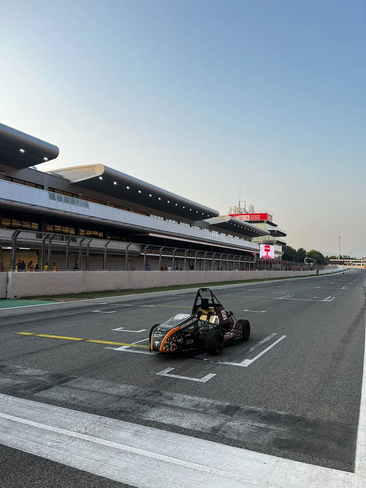
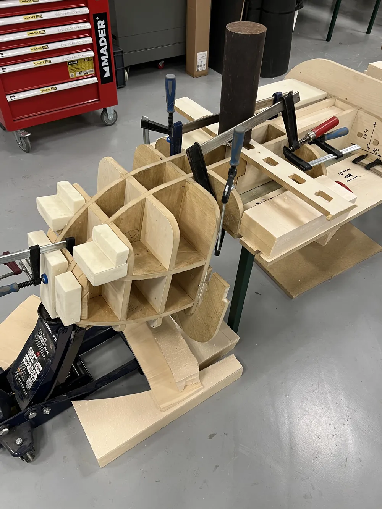
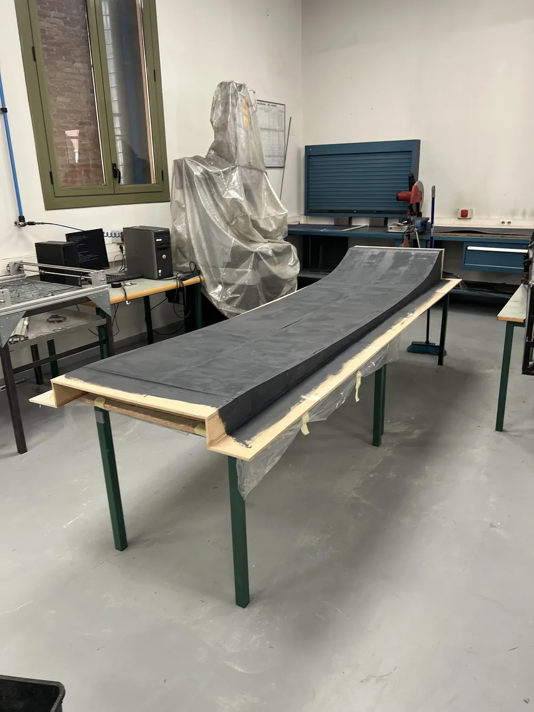
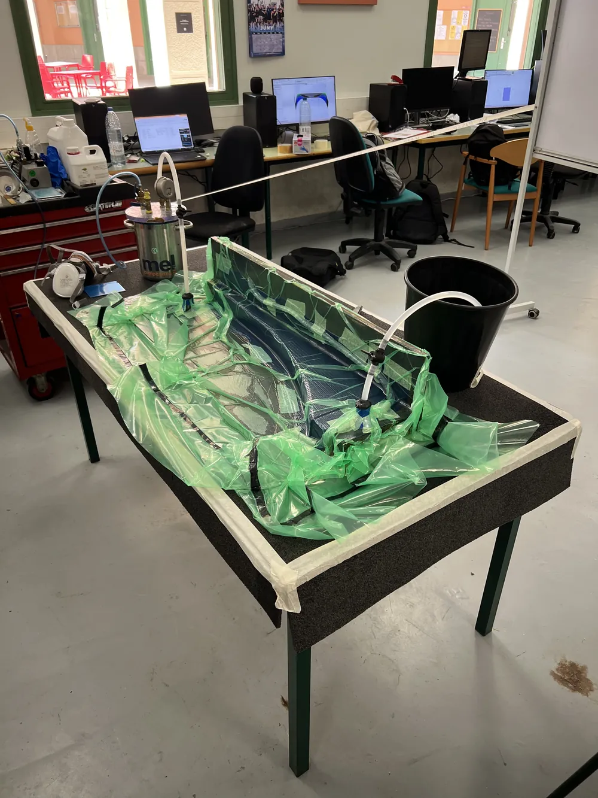
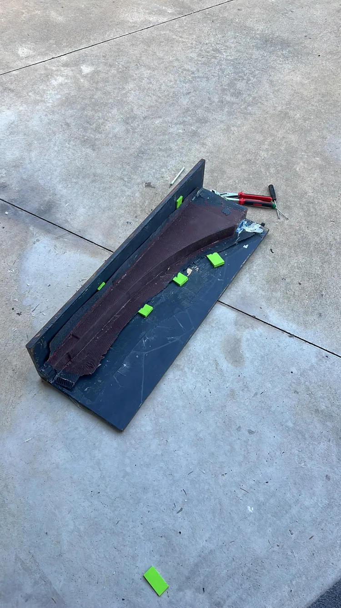

2025 · EUSS Motorsport, Formula Student · Head of Aerodynamics
Manufacturing the EM05 aerodynamic package
After designing the EM05 package in CFD, I led the aerodynamics department through building it: wood-rib and foam moulds, resin-infused carbon-fibre parts, and the brackets and fasteners that hold them to the chassis. The department's materials budget was €3,627, 28 % of the team's budget for the season.
- SolidWorks
- Fusion 360
- Resin infusion
- Mould making

- 8 / 7 Moulds built for seven carbon-fibre parts
- ≈ 28 Parts in the package, including brackets and sheet metal
- €3,627 Materials budget, 28 % of the team total (September 2024 plan)
- 2 events Passed scrutineering at FS Spain and FS Portugal 2025
01Moulds
Each part's mould started as a frame of wooden ribs cut to sections of the CAD surface. We filled the bays between the ribs with XPS and PU foam, shaped the foam to the rib profiles, then coated the surface with PU primer and a release agent.
The package needed eight moulds for its seven carbon-fibre parts.


02Laminates and resin infusion
All the carbon parts were resin-infused. The sequence for each part:
- Lay up the dry carbon fibre in the prepared mould.
- Add the infusion consumables: bleeder, flow mesh, spiral feed line and resin valves.
- Seal the stack in a vacuum bag and pull vacuum.
- Open the resin line and let the vacuum draw resin through the fibre.
- Leave the part to cure under vacuum, then demould.
The preliminary bill of materials specified 2×2 twill carbon at 280 g/m², Greenpoxy 33 resin with SD4770 hardener, and a 2 mm PVC core. Consumables were a P0120 vacuum bag, bleeder, 135 g/m² flow mesh, Ø10 × 12 mm PE infusion tube, spiral tube and 10 mm resin valves.


03Brackets and fixing
The carbon parts are only part of the package. Of its roughly 28 parts, the brackets and fasteners were designed in CAD, and the laser-cut and bent sheet-metal parts were made by suppliers. The package fixes to the chassis with quarter-turn Dzus fasteners (15 in the plan) and rivets. The bodywork also had to seal the car for the rain test, one of the constraints carried over from the design phase.
04Budget
The department's preliminary budget was drawn up in September 2024 and presented to the university's principal when the team's total budget for the season was set. Computers, licences and electricity were provided by the university and sat outside the team budget. Sponsors gave the team discounts on the carbon fibre.
| Category | Main items | Planned [€] |
|---|---|---|
| Moulds | PU foam blocks, MDF board for ribs, epoxy, filler, primers, release agent, sealer | 1,877.60 |
| Infusion materials | 25 lm carbon twill, 2 resin kits, PVC core | 1,215.90 |
| Consumables | Vacuum bag, bleeder, flow mesh, infusion and spiral tube, valves | 194.73 |
| Tools | Polisher, abrasives P60–P3000 | 225.00 |
| Fasteners | Quarter-turn fasteners, rivets | 113.50 |
| Total | 28 % of the team budget | 3,626.73 |
05Role and tools
I was Head of Aerodynamics through the manufacturing phase, having designed the package in my BSc thesis. Manufacturing was a department effort in the team's workshop, with suppliers for laser-cut and bent sheet metal.
Tools and processes: SolidWorks, Fusion 360, mould making with wood ribs and foam, vacuum resin infusion.
Sources: my manufacturing summary slide and photos, and the budget section of my BSc thesis (EUSS, 2025).